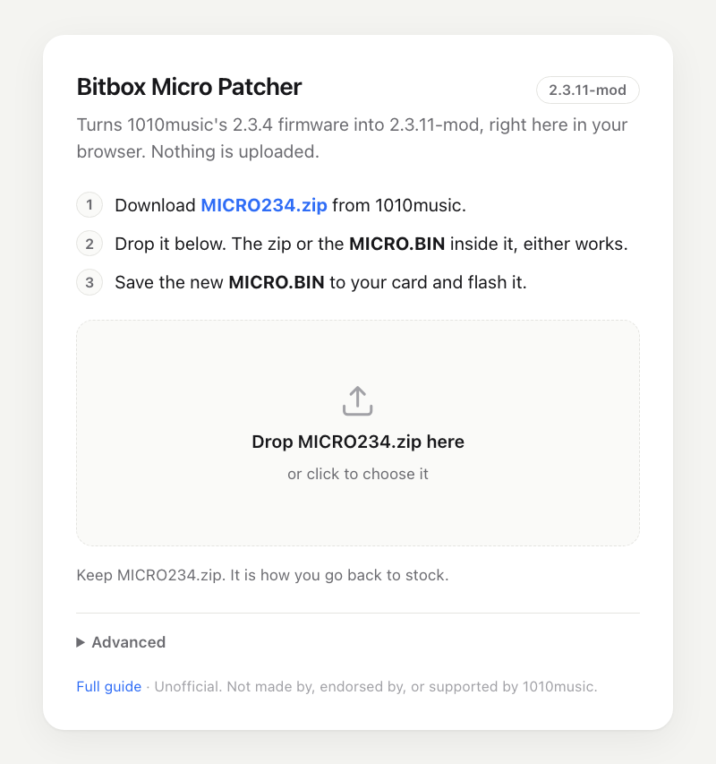

Do this once
Bitbox Micro Firmware: Installing
From downloading the stock firmware to a patched module.
From 1010music's 2.3.4 download to a module running the patch. See the overview for what the patch does.
1Before You Start
You need a Bitbox Micro on firmware 2.3.4 and a microSD card. Keep 1010music's MICRO234.zip: it is how you go back to stock. Back up your card first. The patch never touches your presets or samples, but back it up anyway.
2The Quick Way
The web patcher does the whole build in your browser. Download MICRO234.zip from 1010music, drop it on the page, and it gives you the new MICRO.BIN. Nothing is uploaded and there is nothing to install. Then follow Flashing to put it on your module.

If you have been asked to try an earlier version, it is under Advanced on the same page. Prefer Python? It builds exactly the same file. See Using Python instead.
3Using Python instead
Prerequisites
On top of Before You Start, the Python route needs three things, none of them exotic.
patch_micro.py, the patcher itself.- Your own copy of the stock 2.3.4 image, from https://1010music.com/downloads → bitbox micro →
MICRO234.zip. The script will not run without it, and none of it ships here. - Python 3, any version from the last several years. There is nothing to compile or configure. See Getting Python.
Preparing
Download the firmware from 1010music yourself, under their terms, and unzip it. You get MICRO.BIN. The version is in the zip's name, not the file's, so label your copies.
If you already run an earlier version of this patch, patch your stock MICRO.BIN again, not the image you flashed last time. The script refuses a file that has already been through it. If you no longer have the stock file, download MICRO234.zip again.
It also refuses a wrong firmware version, a file whose code is not exactly what it expects, and an output path that would overwrite your stock copy. Each one stops it before a single byte is written.
Getting Python
Windows: install it from https://www.python.org/downloads/. On the installer's first screen, tick "Add python.exe to PATH" before you click Install. Older installers call the same box "Add Python to PATH". It is easy to click straight past. If you miss it, see Windows Cannot Find Python below.
macOS: it is usually there already. The first time you type python3, macOS may offer to install its command line tools. Say yes. It is a big download, so give it a few minutes. It has not hung.
Linux: it is already there. If a minimal install left it out, your package manager has it under the name python3.
You run the script from a terminal, in the folder that contains patch_micro.py and MICRO.BIN.
Getting the terminal into that folder:
- Windows: open the folder in File Explorer, click into the address bar at the top, type
cmdover what is there, and press Enter. PowerShell works the same way. - macOS: open Terminal, type
cd(with the space), then drag the folder from Finder onto the Terminal window and press Enter. It fills in the path for you. - Linux: most file managers have "Open Terminal Here" on the right-click menu. The macOS drag trick works in most terminals too.
Building
Enter the commands one line at a time, pressing Enter after each. Do not double-click patch_micro.py. That only opens it in a text editor, or flashes a window open and shut.
On Windows:
mkdir patched
python patch_micro.py MICRO.BIN patched/MICRO.BINThe forward slash is right on Windows too.
On macOS and Linux, the command is python3:
mkdir patched
python3 patch_micro.py MICRO.BIN patched/MICRO.BINIf you have patched before, mkdir patched says the folder already exists. That is fine. Carry on.
If you get a long line saying it cannot open patch_micro.py, ending in [Errno 2] No such file or directory, the terminal is not in the folder with those two files. Nothing is broken. Go back to Getting the terminal into that folder above and try again.
The patched image must be named exactly MICRO.BIN, in upper case, or the module will not find it. It goes in its own folder so it cannot overwrite your stock copy, which is your way back. The script refuses if you try to write over it.
That file is yours alone. Do not pass it on. See A Patcher, Not Firmware.
You should see something like this:
Checking your firmware...
ok Genuine bitbox micro 2.3.4, nothing done to it yet
ok The code is where the patch expects to find it
Embellishing your bitbox micro with community requests...
ok Compressor on/off, ch 1 CC 40
ok Compressor threshold, ch 1 CC 41
ok Compressor ratio, ch 1 CC 42
ok Compressor attack, ch 1 CC 43
ok Compressor release, ch 1 CC 44
ok Compressor makeup, ch 1 CC 45
ok EQ mode select, ch 1 CC 50
ok EQ control A, ch 1 CC 51
ok EQ control B, ch 1 CC 52
ok EQ control C, ch 1 CC 53
ok EQ button A, ch 1 CC 54
ok EQ button B, ch 1 CC 55
ok EQ button C, ch 1 CC 56
ok EQ master bypass, ch 1 CC 57
ok EQ filter slope, ch 1 CC 59
ok Granular density, per pad CC 79
ok Granular grain size, per pad CC 80
ok Granular window, per pad CC 81
ok Granular scatter, per pad CC 82
ok Granular pan random, per pad CC 83
ok Delay send, per pad CC 84
ok Reverb send, per pad CC 85
ok Reverse, per pad CC 86
ok Envelope sustain, per pad CC 87
ok Loop mode, per pad CC 88
ok Loop crossfade, per pad CC 89
ok Play through, slicer pads CC 90
ok LFO wave, per pad CC 91
ok LFO beat-sync, per pad CC 92
ok LFO retrigger, per pad CC 93
ok Delay beat-sync, global CC 108
ok Delay ping-pong, global CC 109
ok Delay filter, global CC 110
ok Delay filter width, global CC 111
ok Stop this pad CC 120 / 123
ok Compressor auto makeup, ch 1 CC 46
ok Preset BPM, HOLD capture TOOLS > Settings
ok Character chain, ch 1 CC 14-29
ok OSD: pop-ups and CPU bar TOOLS > Settings
ok Keep CCs: OFF/ON TOOLS > Settings
ok Compressor type, ch 1 CC 47 / 48
ok Theme, and your own TOOLS > Settings
ok Clip modes, per pad CC 112-116
ok Live Flip modes, per pad CC 117
ok Hold buttons, per pad CC 78, 102, 104, 105, 107, 118, 119
ok SD card waits, bounded a stuck card no longer restarts it
ok Gate In, Round Robin Pad Parameters, below Excl Group
ok Gate Action, Hold FX Hold FX by gate, on Clip pads
ok CV Action Live Flip modes and Hold FX by CV
ok Rec In, Gate Rec recording by gate
ok Clip Tempo the Clip mode, saved with the preset
ok Compressor sidechain, ch 1 CC 49
ok Mute and Solo, per pad CC 94, 95
ok ProgChange: OFF/ON/NEW ONLY TOOLS > Settings
ok Clk Loss: INTERNAL/HOLD TOOLS > Settings
ok Flip UI, screen and touch TOOLS > Settings
ok Splash screen, so nobody blames 1010music for my work
Done. MICRO.BIN is ready -- 823,680 bytes.
Fingerprint 371452dfeb818f1a9accb4f44f669ac317d26476f71351e19816ce4b412d5248Check that the fingerprint matches the one above. If it does, your firmware is byte-for-byte the same as everyone else's running this patch.
Add -v to see every change it makes.
4Flashing
- Copy
MICRO.BINto the root of the microSD card, not inside a folder. If you saved it straight to the card, it is already there. Otherwise it is in theBitbox Microzip or folder you downloaded, or atpatched/MICRO.BINif you used the script. - Power the module off and insert the card.
- Hold the white right-arrow button while powering on.
- Release when the display shows Erasing / Programming. It takes about 15 seconds.
Do not interrupt the power while it is writing.
Any working card will flash. For streaming samples while you play, V30 is the rating worth having. Tested with a SanDisk Extreme PRO (SDSQXCU-064G-GN6MA).
5Checking It Worked
The splash on the next boot should read:
bitbox micro
community fw
2.3.12-modCheck the splash after every flash. It takes a second, and it saves you chasing a CC on firmware that was never installed.
Then send one of the patch's CCs. A pop-up in the middle of the screen should name what it changed. That proves the patch is running and your controller is getting through. The CC reference has the full list, and Settings covers the new settings on the Settings page.
Presets That Use It
There is nothing to set up on the module. The controls work on every preset, and you set your controller to send their CCs. An old preset can only give back what it was built to do, though. See Building a Preset for This.
6If Something Goes Wrong
If the splash still says by 1010music and 2.3.4, nothing was flashed. Check that the file is named exactly MICRO.BIN and sits in the card root, not in a folder. Then flash again.
If you used the Python script
Windows Cannot Find Python
Two things can happen here. Neither means you broke anything.
The Microsoft Store Opens Instead of Running Anything
Python is not installed yet. Take the Store's copy, or install from python.org as above. Either works.
It Says 'python' Is Not Recognized
Python is installed, but the "Add python.exe to PATH" tickbox was missed. Before you reinstall anything, try py instead of python:
py patch_micro.py MICRO.BIN patched/MICRO.BINpy comes with Python and usually works when python does not, whether or not you ticked that box.
If py does not work either, install Python again from https://www.python.org/downloads/ and tick "Add python.exe to PATH" this time. Nothing is wrong with the script or your download.
If It Stops with an Error
That is the safety check working. It tells you what it found and what it expected, and it has written nothing.
- "That is not the stock 2.3.4 firmware": the input is a different version, an already patched image, or a truncated download. If you are upgrading from an earlier version of this patch, you have almost certainly pointed it at the image you flashed last time. Patch your original
MICRO.BINagain, the one straight out ofMICRO234.zip. You cannot upgrade a patched image in place. DownloadMICRO234.zipfrom 1010music again if you no longer have it. - "The code at … is not what it should be": the file passes the checksum, but the code underneath is wrong, which should be impossible. Do not force it.
The script checks everything before it writes anything, so there is no such thing as a half-patched file.
Going Back to Stock
Rename your original 1010music download to MICRO.BIN, put it in the card root, and follow the same flashing steps. The module overwrites the patched image with it and forgets any of this happened.
7Can This Brick My Module?
No, it cannot. Firmware is flashed by the bootloader, a separate program in its own region of flash. It is not in the file you patch, and the patch never writes near it. You start it by holding a button at power-on, before any firmware runs. Even a completely broken image cannot stop you flashing a good one.
At worst, the module boots oddly, or not at all. Hold the white right-arrow, flash the stock image back, and two minutes later you are where you started.
The one real risk is losing power during the 15-second write, the same as with an official 1010music update. Even then the bootloader survives, so you just try again. Do not flash from a laptop that is about to sleep, or on a power supply you do not trust.
8When New Firmware Lands
The patcher will refuse it. Its changes are specific to 2.3.4, and on another build they would land somewhere else entirely. Do not work around the version check. Someone has to redo the reverse engineering first.